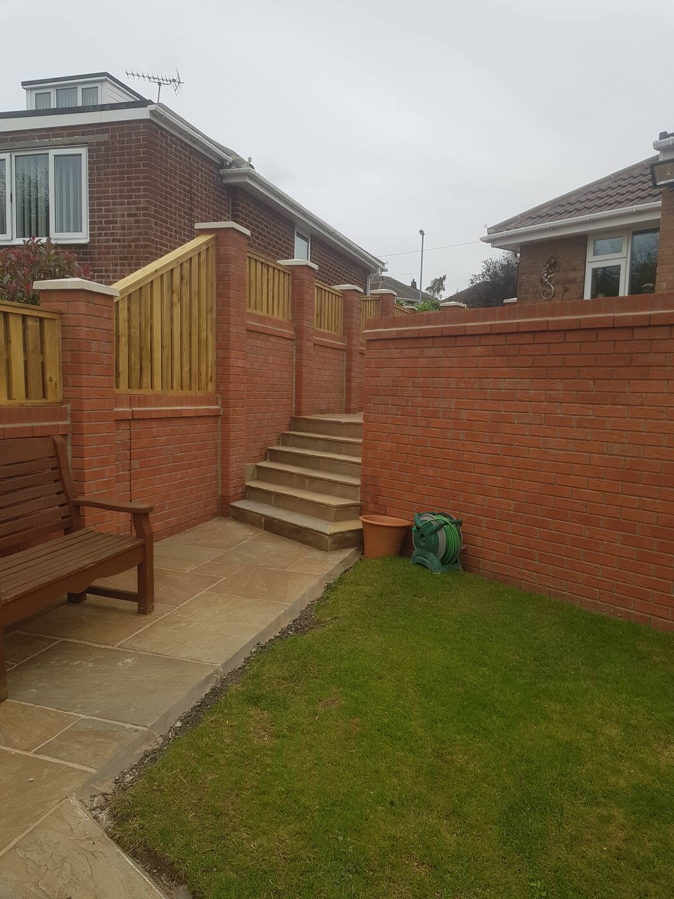

Ward Green Garden work
TypeLandscaping
Photos17
AreaBarnsley & South Yorkshire

About the project
Complete renovation of garden, including Indian Stone flagging and boundary walls

Complete renovation of garden, including Indian Stone flagging and boundary walls